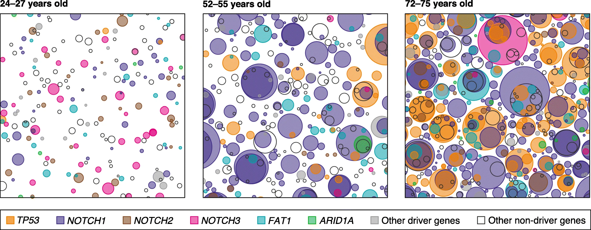
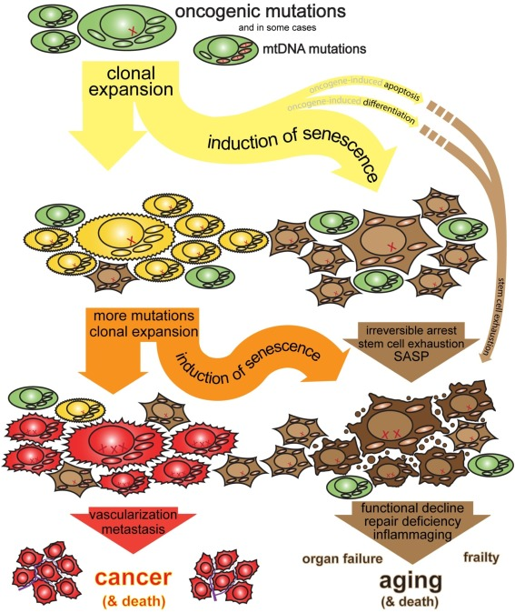
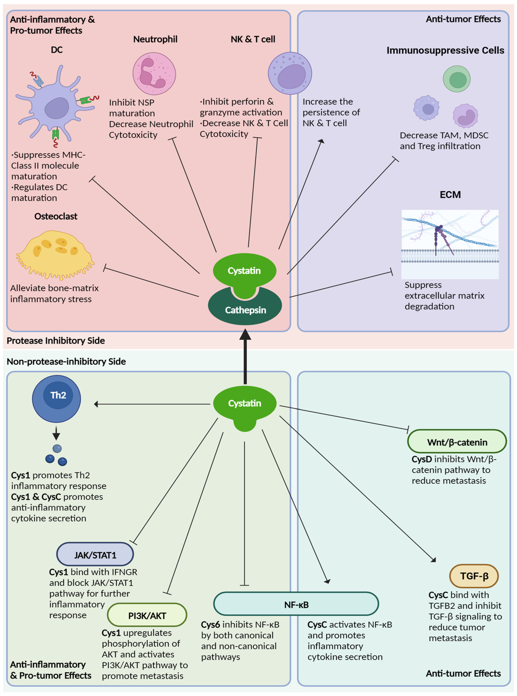

Continue to read the draft.
Log in and become a supporter to read the full article.
Become a supporter to read the full article.
Log in and become a supporter to read the full article.
Become a supporter to read the full article.
This was originally posted as a comment on Scott Alexander’s blog. Scott recommended the comment in Open Thread 420. I reproduce it here with edits.
Scott Alexander: Do some cancers prevent Alzheimers? There’s some evidence that people with cancer are less likely to develop Alzheimers (even adjusting for age/mortality/etc). Why? Some cancers produce large amounts of weird chemicals. One of those chemicals, cystatin c, appears to reverse Alzheimers in mouse models, maybe by dissolving amyloid plaques. And here’s me asking Claude some of the obvious followup questions.
Trade-offs between cancer and degenerative disease crop up fairly often. Both sets of conditions are thought to be consequences of an increased cheater-cell load in old age. Cancers, obviously so. But how does degenerative disease result from cellular defection? And why would it trade-off with cancer?
Young bodies are very good at repairing themselves through regeneration. Old bodies tend to have much weaker regeneration. There are reasons to speculate this transition could be adaptive: weaker old-age regeneration can result in longer overall lifespans.
Each cell in a multicellular body has the ability to bring down the entire organism by hotwiring its “multiply right now” button to always be switched on. And as we know from Bostrom’s Vulnerable World Hypothesis (the “easy nukes” scenario), if a single agent’s defection carries existential risk to the entire system, those systems will feature draconian levels of surveillance and resource control, or be very short-lived.
This is exactly what we find when we compare cells in multicellular organisms to their unicellular siblings. As a result of pressure towards defection reduction, the evolution of multicellularity produced all sorts of mechanisms that strictly control when replication is allowed: growth factors, surveillance checkpoints, and tumor suppressors.
Some of them are permission-slip-style signals that result in slower, more legible cell division.
Others are internal damage sensors, prompting defectors to commit suicide when their loyalty is uncertain (this is why your skin itches after a sunburn).
Still others act as “endogenous chemo”, dialing down cell division across the entire organism in response to various stressors and signals associated with high cheater load.
Young bodies have the same genome and the full set of defection control genes in all cells. It’s a high-trust society where the risk of having a cheater cell is low. If tissue gets damaged and some cells get lost, it’s pretty straightforward to command surviving cells to proliferate and close the wound. The young body’s cells are rightly expected to proliferate in a responsible, orderly manner.
Old bodies are riddled with mutated precancerous cells - cells that have some of the defector controls broken. The term for this state is somatic mosaicism. Somatic evolution pushes precancerous cells to out-compete and out-multiply normal cells, so over time their number is constantly growing. Mosaicism is pervasive in proliferating tissues like skin and intestines, but is also detectable in largely post-mitotic organs like the brain.

So evolution encounters a trade-off between “being healthy” and “surviving longer”:
The old body could give its cells permission to proliferate and repair the tissue as normal. This keeps the body functional, but at the same time it’s not using any locks that prevent the precancerous cells from going “all in” and destroying the body by forming tumors.
The old body could enter the “coup-proof” curfew state, and restrict cell regeneration by triggering cell senescence or tissue inflammation. This “low trust” tissue state protects from cancer, but leads to the frailty and tissue loss common in many diseases of old age.
If you die of cancer at 60, your body chose option 1.
If you die of degenerative disease at 80, your body chose option 2.
If you live to 110, you were somewhere in the middle, plus were lucky enough to avoid a cancerous cell mutating all of its tumor-suppressor locks.

This “tumor suppressor theory of aging” is rearing its head in biogerontology from time to time, usually when the new crop of anti-aging therapeutics fails to deliver results. To be clear, it’s far from a consensus view - but to be fair, there’s almost nothing in biogerontology that’s consensus.
Is this Antagonistic Pleiotropy?
Antagonistic Pleiotropy (AP) is a concept commonly used in biogerontology to refer to all sorts of age-related tradeoffs, but its usage is contested in the specific case of the cancer-senescence relationship.
To sum up the contention, AP-style selection involves evolution selecting for traits with “sign flipping” behavior, when the same trait is beneficial in early life and detrimental in late life. However, this “sign flipping” implies that “deleting” the AP trait in late life would extend the organism’s lifespan.
But it’s clear that deleting most tumor-suppressing senescence programs in late life would be catastrophic for the organism on account of all the accumulated precancerous cells: no matter how severe the costs of suppression get, cancer protection is worth paying for, so the “sign” never flips. Through this lens, while cancer-senescence tradeoffs could be real and very important, they are not best modeled as a classic AP-style tradeoff.
One question is “Why would this regeneration-cancer trade-off apply to Alzheimer’s when neurons don’t proliferate anyway?”. I’m not sure. I welcome any brain specialists to elaborate. Here are the types of degeneration mechanisms I would expect to find in post-mitotic tissues under age-related defector cell load.
Non-adaptive degenerative side effect of an adaptive whole-body anti-defector program: pro-inflammatory endocrine factors are secreted into the bloodstream to clamp down on somatic mosaicism in rapidly proliferating tissues like skin, the hematopoietic system, and the digestive system. The detrimental effects of this endocrine state on the brain are not adaptive, but the same state can be adaptive elsewhere and therefore remain under selection.
Local adaptive degenerative response to distal defection signals: Brain blood-vessel cells and glial cells might react to increased cheater cell load elsewhere by “hardening” brain extracellular matrix (ECM) to prevent metastasis into the brain. This prolongs organismal lifespan, with the side effect of increased plaque susceptibility. As opposed to the previous case, here reversing the pro-degenerative brain conditions would make things worse off for the brain.
Local degenerative responses to local defection signals: Plaque growth is regulated by non-neuronal cells, so local defector suppression (e.g. SASP-like paracrine signaling) can also be a trigger for localized microenvironment changes contributing to plaque formation.
In the Li et al. paper that started this post, tumor cells secrete Cystatin C, which binds to TREM2 receptors on microglia and prompts the microglial cells to degrade amyloid plaques. Which category of degeneration does this evidence lead us towards?
Not category 2. Category 2 predicts the brain becoming less functional in response to increase in cheater cells, but the latest paper shows the brain is becoming more functional when cancer cells are introduced.
Not category 3. Category 3 predicts degenerative responses to arise as a consequence of defection among cells resident in the brain tissue. However, in Li et al. cancer cells were located outside the brain.
The best fit to this specific mechanism seems to be something like category 1.
Category 1 predicts that we would find metabolic programs that downregulate circulating Cystatin C in old age as a part of a ramping anti-defector effort, and this has an unfortunate side effect of preventing CysC doing its job in the brain (where it helps clear plaques). Could it be that CysC have any pro-tumor effects?

Tumors secrete molecules that cut, loosen, or remodel extracellular scaffolding. In the tumor setting that helps invasion. In a plaque-heavy brain setting, the same class of matrix-remodeling factors can make aggregates less stable or open more routes for clearance. So the same biochemical signature can be pro-metastatic in one context and anti-plaque in another.
Longitudinal studies find that low serum Cystatin C predicts Alzheimer’s risk. Elderly individuals with lower Cystatin C are more likely to develop AD than their peers with higher levels.
The “Anti-Defector Program” in this context is likely Inflammaging (chronic, low-grade inflammation).
The aging body enters a pro-inflammatory state to suppress the growth of potential tumors. Since Cystatin C is anti-inflammatory (it inhibits cathepsins and antagonizes TGF-beta), the “Anti-Defector” drive favors a milieu where Cystatin C’s immunosuppressive effects are minimized (or overwhelmed).
The Outcome:
Healthy Aging (Anti-Defector Active): The immune system is active/inflammatory. Cystatin C is insufficient to clear plaques. Result: Alzheimer’s risk.[1][2][3]
Cancer (Anti-Defector Failed): The tumor “cheats” by flooding the system with Cystatin C to suppress the immune attack. Side Effect: This flood of Cystatin C accidentally crosses the blood-brain barrier and activates microglia (via TREM2) to clear plaques. Result: Alzheimer’s cured.
Conclusion: We do not observe a simple “reduction program” because renal failure masks it, but we do observe that relative deficiency (compared to the tumor state) is the status quo of the healthy, non-cancerous elderly body. The degeneration (AD) is the price paid for not having the “tumor-level” immunosuppressive signals (Cystatin C) circulating in the blood.
Peter Mernyei: Would there really be any evolutionary pressure to keep the body alive longer in old age at the cost of increased frailty? I’d have thought in an ancestral environment you’re likely to die anyway if you’re making either choice, and in any case you’re very likely not reproducing anymore. So my naive expectation would be that evolution just programs whatever works for younger bodies that it actually “sees clearly” and it “doesn’t think about” what happens to older bodies very much.
This comment effectively describes Medawar’s “Selection shadow”, and generally, yes, that’s right, evolution won’t design an “aging program” specifically for the post-reproductive life stage. But to see cancer-frailty tradeoffs, no new “programs” need to start in old age. The tradeoff can simply be the consequence of tumor suppression strategies that work the same pre-reproduction as they do post-menopause.
What’s happening here isn’t evolution looking at the 80-year-old human and deciding “Let’s make him frail to keep him alive until 90”. What probably happened was evolution looking at the 10-year-old proto-mammals who keep dying of carcinoma and deciding “Let’s give these creatures a hair-trigger tumor suppressor so that they survive until 20 more often”. You can expect lifespans to rise in this way as species shift to ecological niches that reward slow life strategies: memory formation, sociality, caring for the young, predator avoidance, niche construction, basically anything where benefits to your kin compound over organismal time.
To achieve that, evolution selects for aggressive tumor suppression in response to cheater cell burden. Long-lived animals evolved to shut down replication at the slightest signal of DNA mutation. This adaptation is highly useful for a pre-reproductive organism and lets the young survive the cheater cell burden typical for their age. The “trade-off” is just that these same hyper-vigilant safety lockdowns keep happening more and more often as the number of mutated cheater cells rises steadily over the decades.
So under this lens, evolution didn’t “program frailty” for the elderly. It programmed “high-security anti-cancer lockdowns” for the young, with side effects that ramp up over time until they’re just as deadly as cancer itself.
(As an addition, there are some good reasons to believe post-reproductive organisms can also be visible to evolution via kin selection - see grandmother hypothesis - but this is not strictly necessary for the explanation.)
Log in and become a supporter to read the full article.
Become a supporter to read the full article.